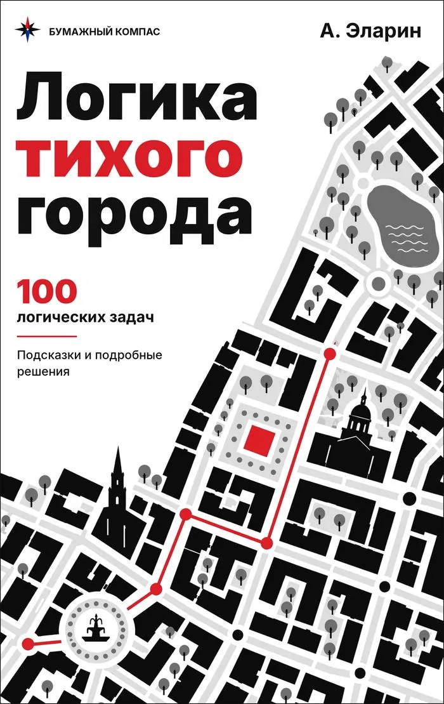

Логические задачи
Задачи на рассуждение: кто когда пришёл, если известны только подсказки. Как решать с помощью таблицы, задачи с ответами для печати и тренажёр.

Таблица «да — нет»
В таких задачах ничего не нужно вычислять — нужно исключать варианты. Удобнее всего завести таблицу: строки — люди, столбцы — часы.
- Читайте подсказки по одной и ставьте крестик там, где точно «нет».
- Если в строке или в столбце осталась одна пустая клетка, ставьте там галочку — это ответ.
- Галочка вычёркивает остальные клетки своей строки и своего столбца.
- Подсказки «раньше, чем» и «на час раньше» связывают двух людей — проверяйте их парами.
Начинать лучше с подсказки, которая сразу исключает больше всего вариантов.
Задачи с ответами
Задача 1 · три человека
Три фотографа пришли на маяк в 9, 10 и 11 часов — по одному в каждый час. Кто когда пришёл?
- Вера пришла ровно на час раньше, чем Борис.
- Вера пришла раньше, чем Зоя.
| 9:00 | 10:00 | 11:00 | |
|---|---|---|---|
| Вера | |||
| Зоя | |||
| Борис |
Ответ
Вера — 9:00, Зоя — 11:00, Борис — 10:00.
Задача 2 · четыре человека
Четыре фотографа пришли на маяк в 9, 10, 11 и 12 часов — по одному в каждый час. Кто когда пришёл?
- Вера пришла ровно на час раньше, чем Нина.
- Дина и Вера пришли не друг за другом.
- Нина пришла раньше, чем Борис.
- Дина пришла не в 12:00.
| 9:00 | 10:00 | 11:00 | 12:00 | |
|---|---|---|---|---|
| Дина | ||||
| Вера | ||||
| Борис | ||||
| Нина |
Ответ
Дина — 11:00, Вера — 9:00, Борис — 12:00, Нина — 10:00.
Ответы на печать не выводятся — только сами задачи и таблицы.

Логика тихого города
Логика тихого города
Сборник для подростков и взрослых: 100 задач на логику, числа, геометрию, вероятность и стратегию.
- 100 логических задач с подсказками и подробными решениями
- Логика, числа, геометрия, вероятность, стратегия
- От быстрых разминок до задач на целый вечер
- Для подростков от 12 лет и взрослых
На Литрес можно бесплатно полистать начало книги.
Коротко о главном
С какого возраста такие задачи?
Задачи на троих обычно подходят с 8–9 лет, на пятерых — тем, кто уже уверенно пользуется таблицей. В тренажёре сложность можно выбрать.
Почему у задачи ровно одно решение?
В тренажёре каждая задача собирается заново, и подсказок в ней ровно столько, чтобы решение было одно.
Для кого книга «Логика тихого города»?
Для подростков от 12 лет и взрослых: 100 задач с подсказками и подробными решениями.